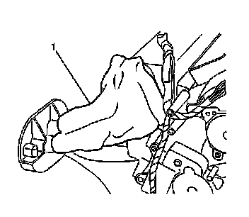
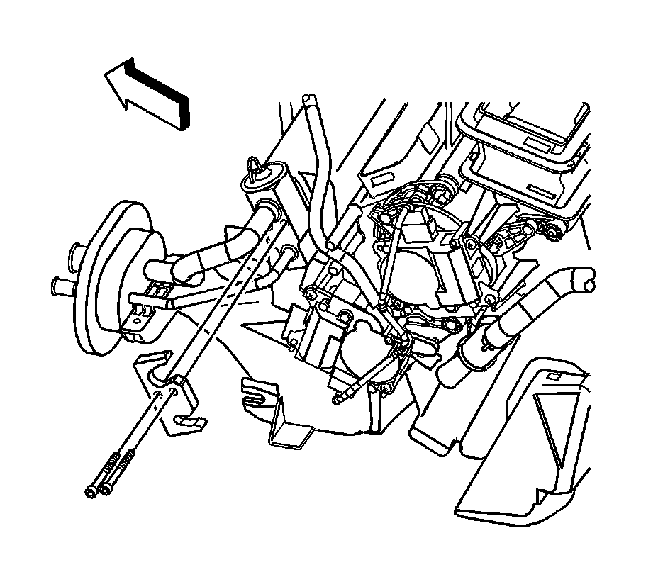
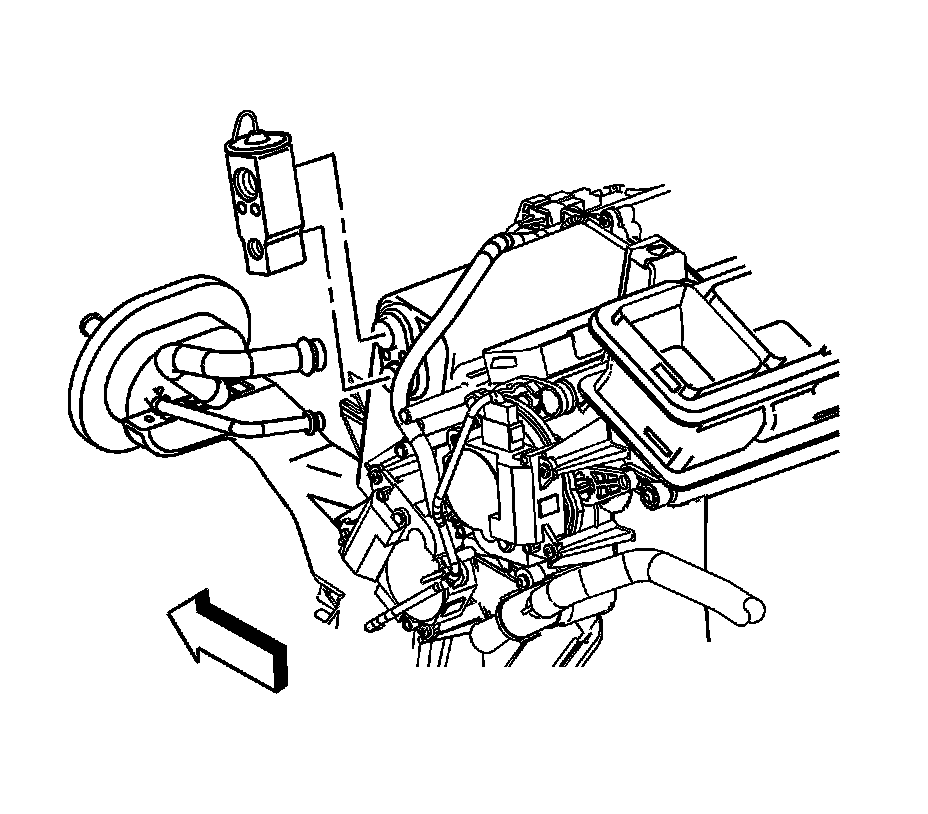

Expansion Valve: Service and Repair
Thermal Expansion Valve Replacement
Tools Required
J 39400-A Halogen Leak Detector
Removal Procedure
1. Recover the refrigerant from the A/C system. Refer to Refrigerant Recovery and Recharging (Refrigerant Recovery and Recharging) .
2. Remove the instrument panel (I/P) carrier. Refer to Instrument Panel Carrier Replacement (Left Hand Drive) (Service and Repair)Instrument Panel Carrier Replacement (Right Hand Drive) (Service and Repair) .

3. Remove the insulation (1) from the thermal expansion valve (TXV).

4. Remove the HVAC line clamp screw.
5. Remove the HVAC line clamp.

6. Remove the TXV to evaporator bolts.
7. Remove the TXV line bracket.

8. Remove the TXV from the evaporator core.
9. Disconnect the TXV from the A/C lines by pulling straight out.
10. Remove the TXV.
11. Remove and discard all O-rings.
Installation Procedure
1. Install new O-rings. Refer to O-Ring Replacement (Service and Repair) .
2. Install the A/C lines into the TXV.
3. Install the TXV onto the evaporator core.
4. Install the TXV line bracket.
Notice: Refer to Fastener Notice (Fastener Notice) .
5. Install the TXV to evaporator bolts.
Tighten the bolts to 3.5 N.m (31 lb in).
6. Install the HVAC line clamp.
7. Install the HVAC line clamp screw.
Tighten the screw to 1 N.m (9 lb in).
8. Install the insulation (1) onto the lines and TXV.
9. Install the instrument panel (I/P) carrier. Refer to Instrument Panel Carrier Replacement (Left Hand Drive) (Service and Repair)Instrument Panel Carrier Replacement (Right Hand Drive) (Service and Repair) .
10. Evacuate the A/C system. Refer to Refrigerant Recovery and Recharging (Refrigerant Recovery and Recharging) .
11. Leak test the fittings of the component using J 39400-A .